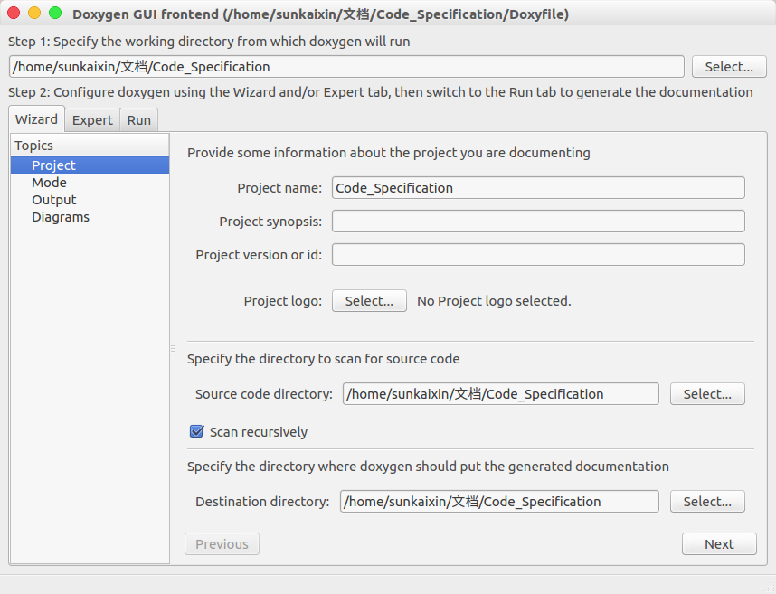
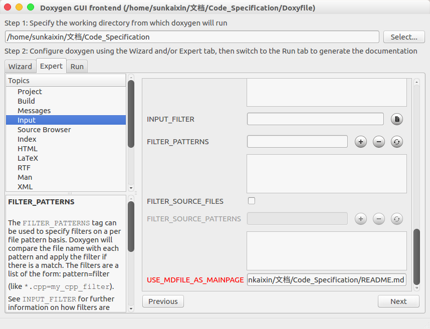

推荐但不限定于使用vscode作为代码开发工具，如不使用vscode，请遵循代码及注释规范。
工具名称：vscode
版本：暂不限定
下载地址：https://code.visualstudio.com/
安装方式：下载.deb格式安装包，直接双击或者执行sudo dpkg -i xxx.deb
安装包位置：soft_deb/code_1.48.1-1597857616_amd64.deb
该插件可以帮助大家开发过程更加顺畅，并非强制要求。
1、名称: C/C++
ID: ms-vscode.cpptools
说明: C/C++ IntelliSense, debugging, and code browsing.
版本: 1.0.1-insiders
发布者: Microsoft
VS Marketplace 链接: https://marketplace.visualstudio.com/items?itemName=ms-vscode.cpptools
2、名称: C++ Intellisense
ID: austin.code-gnu-global
说明: C/C++ Intellisense with the help of GNU Global tags
版本: 0.2.2
发布者: austin
VS Marketplace 链接: https://marketplace.visualstudio.com/items?itemName=austin.code-gnu-global
3、名称: Python
ID: ms-python.python
说明: Linting, Debugging (multi-threaded, remote), Intellisense, Jupyter Notebooks, code formatting, refactoring, unit tests, snippets, and more.
版本: 2020.8.109390
发布者: Microsoft
VS Marketplace 链接: https://marketplace.visualstudio.com/items?itemName=ms-python.python
4、名称: ROS
ID: ms-iot.vscode-ros
说明: Develop Robot Operating System (ROS) with Visual Studio Code.
版本: 0.6.4
发布者: Microsoft
VS Marketplace 链接: https://marketplace.visualstudio.com/items?itemName=ms-iot.vscode-ros
5、名称: Todo Tree
ID: gruntfuggly.todo-tree
说明: Show TODO, FIXME, etc. comment tags in a tree view
版本: 0.0.178
发布者: Gruntfuggly
VS Marketplace 链接: https://marketplace.visualstudio.com/items?itemName=Gruntfuggly.todo-tree
6、名称: Markdown All in One
ID: yzhang.markdown-all-in-one
说明: All you need to write Markdown (keyboard shortcuts, table of contents, auto preview and more)
版本: 3.3.0
发布者: Yu Zhang
VS Marketplace 链接: https://marketplace.visualstudio.com/items?itemName=yzhang.markdown-all-in-one
7、名称: Guides
ID: spywhere.guides
说明: An extension for more guide lines
版本: 0.9.3
发布者: spywhere
VS Marketplace 链接: https://marketplace.visualstudio.com/items?itemName=spywhere.guides
8、名称: GitLens — Git supercharged
ID: eamodio.gitlens
说明: Supercharge the Git capabilities built into Visual Studio Code — Visualize code authorship at a glance via Git blame annotations and code lens, seamlessly navigate and explore Git repositories, gain valuable insights via powerful comparison commands, and so much more
版本: 10.2.2
发布者: Eric Amodio
VS Marketplace 链接: https://marketplace.visualstudio.com/items?itemName=eamodio.gitlens
9、名称: Doxygen Documentation Generator
ID: cschlosser.doxdocgen
说明: Let me generate Doxygen documentation from your source code for you.
版本: 0.7.2
发布者: Christoph Schlosser
VS Marketplace 链接: https://marketplace.visualstudio.com/items?itemName=cschlosser.doxdocgen
10、名称: Bracket Pair Colorizer
ID: coenraads.bracket-pair-colorizer
说明: A customizable extension for colorizing matching brackets
版本: 1.0.61
发布者: CoenraadS
VS Marketplace 链接: https://marketplace.visualstudio.com/items?itemName=CoenraadS.bracket-pair-colorizer
11、名称: Auto Markdown TOC
ID: huntertran.auto-markdown-toc
说明: Markdown TOC (Table Of Contents) Plugin for Visual Studio Code.
版本: 3.0.12
发布者: Hunter Tran
VS Marketplace 链接: https://marketplace.visualstudio.com/items?itemName=huntertran.auto-markdown-toc
Ctrl+Shift+X打开扩展页面；install进行安装；sudo apt-get install graphviz graphviz-doc；sudo apt-get install doxygen doxygen-gui。Ctrl+Shift+P打开控制端口；settings json，点击Open Setting；settings.json文件中，并按照注释进行修改：{
"window.zoomLevel": 2,
"editor.fontSize": 15,
"workbench.colorTheme": "Horizon Bright Italic",
"cmake.configureOnOpen": true,
"explorer.confirmDelete": false,
"terminal.integrated.shell.linux": "/bin/bash",
"editor.renderIndentGuides": false,
"git.ignoreMissingGitWarning": true,
"gitlens.views.repositories.location": "gitlens",
"gitlens.views.fileHistory.location": "gitlens",
"gitlens.views.lineHistory.location": "gitlens",
"gitlens.views.compare.location": "gitlens",
"gitlens.views.search.location": "gitlens",
"[markdown]": {
"editor.defaultFormatter": "yzhang.markdown-all-in-one"
},
"files.autoSave": "afterDelay",
"gitlens.gitCommands.closeOnFocusOut": true,
"git.autofetch": true,
"todo-tree.tree.showScanModeButton": false,
"C_Cpp.updateChannel": "Insiders",
"launch": {
"configurations": [],
"compounds": []
},
"doxdocgen.file.copyrightTag": [
"@copyright Copyright (c) {year} 潍柴动力"
],
"doxdocgen.file.customTag": [
"@par 修改日志:",
"<table>",
"<tr><th>Date <th>Version <th>Author <th>Description",
"<tr><td>{date} <td>1.0 <td>孙凯信 <td>内容",//这里改成自己的名字
"</table>",
],
"doxdocgen.file.fileOrder": [
"file",
"brief",
"author",
"version",
"date",
"empty",
"copyright",
"empty",
"custom"
],
"doxdocgen.file.fileTemplate": "@file {name}",
"doxdocgen.file.versionTag": "@version 1.0",
"doxdocgen.generic.authorEmail": "sunkaixin@weichai.com",//改成自己邮箱
"doxdocgen.generic.authorName": "孙凯信",//改成自己名字
"doxdocgen.generic.authorTag": "@author {author} ({email})",
"doxdocgen.generic.order": [
"brief",
"empty",
"tparam",
"param",
"return"
],
"doxdocgen.generic.paramTemplate": "@param{indent:8}{param}{indent:25}My Param doc",
"doxdocgen.generic.returnTemplate": "@return {type} ",
"doxdocgen.generic.splitCasingSmartText": true,
"editor.semanticTokenColorCustomizations": null,
}
在本部分约束了代码开发过程中的行为规范，涉及到的部分功能使用不做详细概述
项目文件应由该项目的主程序员根据详细功能开发方案进行建立，写好相关README文件后，上传至gitlab，项目参与人员将项目git至本地，并按照README中的项目分工（TODO）进行开发。
为了遵循易读性和复用性的原则，代码尽量遵循以下开发原则：
Doxygen 是一个程序的文件产生工具，可将程序中的特定批注转换成为说明文件。提供了一套注释方式便于把代码中的注释生成说明文档。
1、简单注释
2、文件注释
/**下面@和后面关键字之间无空格
* @ file perception.cpp
* @ brief 本程序实现项目所需的感知功能，接收一个32线激光雷达信息、两个单线激光雷达信息，输出障碍物列表（lidarObject）
* @ author 孙凯信 (sunkaixin@weichai.com)
* @ version 1.0
* @ date 2020-09-21
* @ copyright Copyright (c) 2020 潍柴动力
*
* @ par 修改日志:
* <table>
* <tr><th>Date <th>Version <th>Author <th>Description
* <tr><td>2020-09-21 <td>1.0 <td>孙凯信 <td>内容
* </table>
*/
当配置完成后，在文件开头输入
/**后，点击回车，即可自动加载模板
3、类定义注释
/**下面@和后面关键字之间无空格
* @ brief 测试类
* 主要用来演示Doxygen类的注释方式
*/
class Test
{
};
当配置完成后，在类定义前一行输入
/**后，点击回车，即可自动加载模板，命名空间、结构体、联合体、枚举定义与类定义注释方式一致。
4、常量/变量的注释
常量/变量包括以下几种类型
注释分为两种方式，可根据具体情况自行选择：
/// 注释
常量/变量
例如：
/// 缓存大小
#define BUFSIZ 1024*4
常量/变量 ///< 注释
例如：
#define BUFSIZ 1024*4 ///< 缓存大小
5、函数注释
/**下面@和后面关键字之间无空格
* @ brief 此函数用于点云降采样，根据voxel_size对cloud_in点云进行体素滤波。
* @ tparam PointT 点云模板
* @ param cloud_in 输入的点云
* @ param cloud_out 输出的点云
* @ param voxel_size_x 体素网格的长度
* @ param voxel_size_y 体素网格的宽度
* @ param voxel_size_z 体素网格的高度
*/
当配置完成后，在函数前一行输入
/**后，点击回车，即可自动加载模板
根据函数需求，可进行详细函数注释：
/**下面@和后面关键字之间无空格
* @ brief 函数简介
* @ detail 详细说明
*
* @ param 形参 参数说明
* @ param 形参 参数说明
* @ return 返回说明
* @ retval 返回值说明
* @ note 注解
* @ attention 注意
* @ warning 警告
* @ exception 异常
*/
Python中的注释规则较为简单，未在vocode中配置快捷方式，利用多行注释的方式，在文件开头，函数、类等下一行进行注释即可
"""@ package docstring
Documentation for this module.
More details.
"""
def func():
"""Documentation for a function.
More details.
"""
pass
class PyClass:
"""Documentation for a class.
More details.
"""
def __init__(self):
"""The constructor."""
self._memVar = 0;
def PyMethod(self):
"""Documentation for a method."""
pass
写代码过程中，突然发现一个Bug，但是又不想停下来手中的活，以免打断思路，怎么办？按代码编写会规范，都是建议在代码中加个TODO注释。比如这样：
//TODO:这里有个bug，但是空间太小了，我的算法写不下。
或者
//FIXME:哪个混蛋写的垃圾代码，会崩溃的。
当写完后即可在vscode资源管理器（Ctrl+Shift+E）中看到TODOS的列表清单，同时在程序中也会以高亮的形式体现出来。
按Ctrl+Shift+T打开终端，输入doxywizard，按回车，打开doxygen可视化界面
设置工作路径、源代码路径（注意勾选scan recursively）、导出目录，如下图所示

